In this writing, I want to share how a deployment pipeline moved my SpaceParts semantic model from Dev to Prod and left it reading the Dev lakehouse, and how a Fabric deployment plan, with one notebook as a post-deployment action, finally pointed it at Prod.
My plan was simple. Deployment plans are a new item in Fabric, in preview, that add an order and actions to a deployment, and my model needed exactly one action: something to point it at the Prod lakehouse after every deployment. I expected one plan, one action and one deployment. It took a notebook I first ran by hand, an error that told me exactly what was missing, a deployment that failed and still deployed the model, an arrow drawn the wrong way round, and a refresh I had to take out of the notebook. Each of those taught me something about how a plan runs, so I want to walk through them in the order they happened.
1. Two IDs in One Line of expressions.tmdl
The sample is SpaceParts. I have two workspaces, SpaceParts for Dev and SpaceParts Production for Prod, each connected to its own Git repository, and a deployment pipeline called SpaceParts_deployment with two stages, SpaceParts Dev and SpaceParts Prod. Before the first deployment, all four items in Dev were marked Only in source: the SpaceParts lakehouse, the Load SpaceParts data notebook that fills it, the semantic model spaceparts_directlake_import_semanticmodel, and the report spaceparts_report.
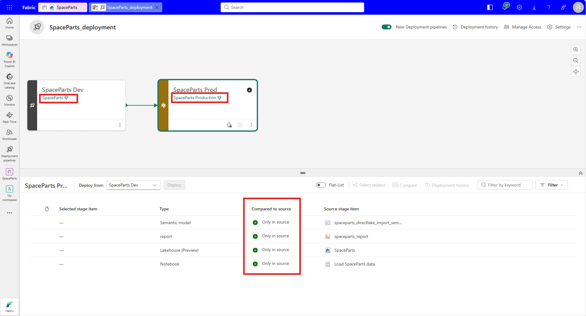
The semantic model is composite. Four tables, orders, invoices, budget and forecast, are Direct Lake on OneLake. Ten tables are Import, and the rest are calculated tables such as Date, Reporting Currency and the Time Intelligence calculation group. The Direct Lake tables and the Import tables both read from the same lakehouse, but they find it in two different ways, and both ways had to be repointed later.
The Direct Lake tables find it by ID. The Dev lakehouse opens at an address that carries two IDs, the workspace 1616f463-89fb-42c3-9cda-281809c16629 and the lakehouse a9779aaf-d8a9-4b22-898e-108ae23fa0d6.
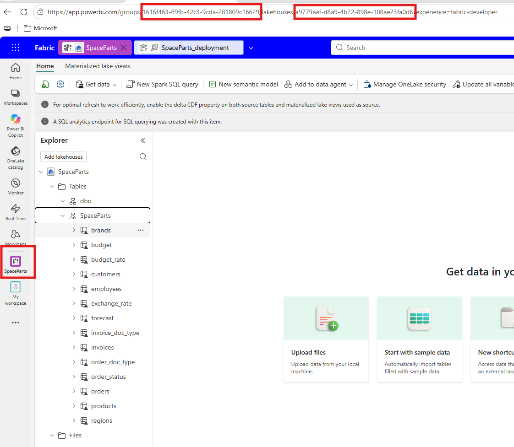
The same two IDs sit on line 3 of expressions.tmdl, inside the AzureStorage.DataLake URL of the shared expression DirectLake - SpaceParts. All four Direct Lake partitions name that expression as their source.
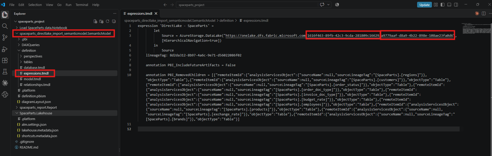
The Import tables find it by server and name. Each of the ten Import partitions starts the same way, with the lakehouse's SQL analytics endpoint and the database name SpaceParts. This is the Brands table:
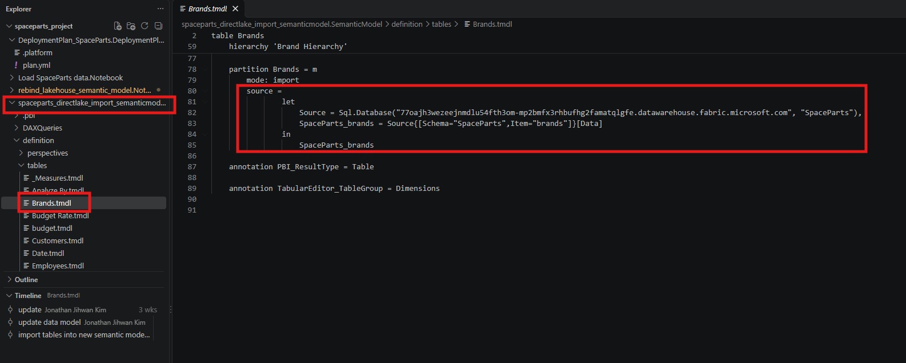
2. A Successful Deployment That Still Read Dev
I selected all four items and deployed. The confirmation dialog listed all four as new.
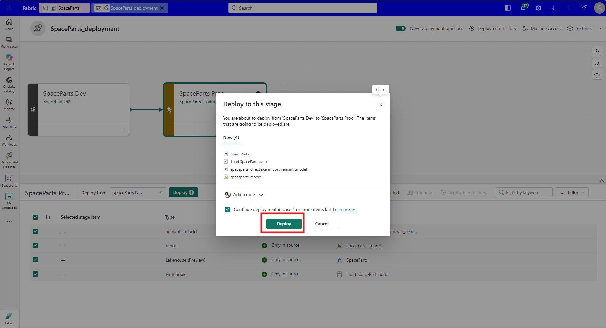
The pipeline reported Successful deployment, and every item in Prod was now Same as source.
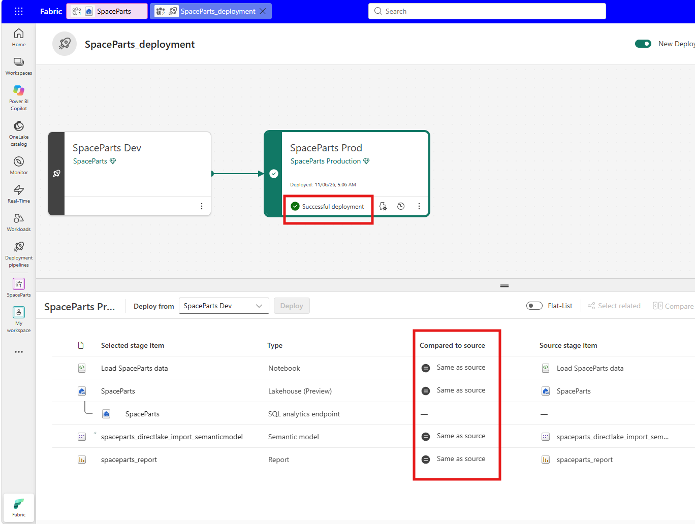
The Prod lakehouse had new IDs, 26172069-a0ed-4c4a-8c61-a15715c9139e for the workspace and 0c495b60-7437-4a3b-a1f7-f3ab518bad6d for the lakehouse.
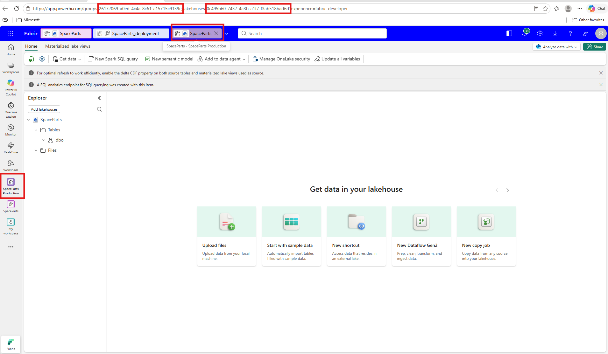
It was also empty. A deployment creates a new, empty lakehouse in the target workspace, as the Lakehouse git integration and deployment pipelines article describes, and in a real project the production lakehouse already has its data. So I leave that part here, because what matters in this writing is where the model reads from.
The lineage view of the Prod workspace showed where the Prod model was reading from. Its two inputs, a SQL analytics endpoint and a lakehouse, both carry the tag SpaceParts, the name of the Dev workspace. The Prod lakehouse sits further down with its own SQL analytics endpoint and the copied notebook, and nothing connects it to the model.
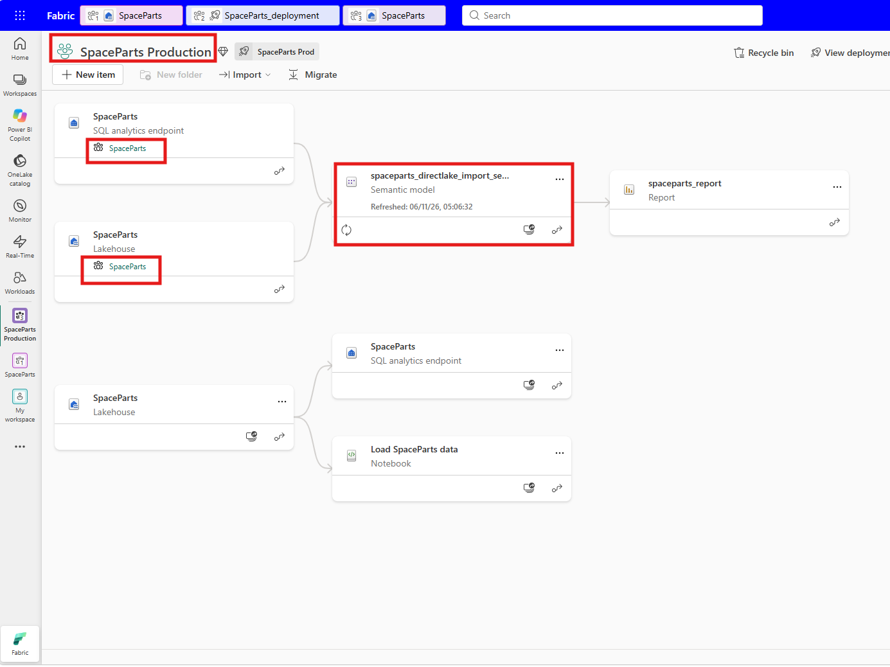
VS Code agreed. With the Dev repository on the left and the Prod repository on the right, expressions.tmdl was the same file in both, Dev IDs included.
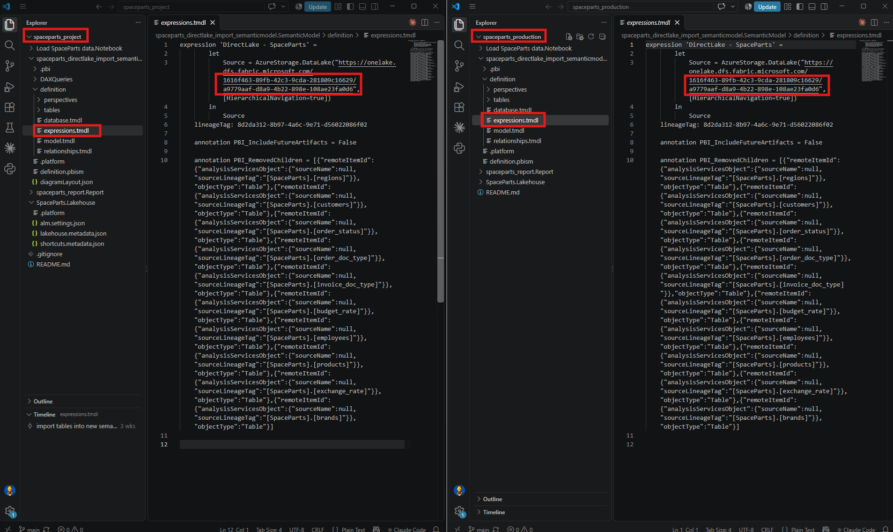
This is how deployment is meant to work. The Semantic model limitations section of The Microsoft Fabric deployment pipelines process says that when you deploy a Direct Lake semantic model, it doesn't automatically bind to items in the target stage, and that the model in the target stage still binds to the lakehouse in the source stage. The same paragraph suggests datasource rules to fix that. For my model, that route is closed. In the Considerations and limitations table of the Direct Lake overview, the row Deployment pipeline rules to rebind data source says Not supported for Direct Lake on OneLake, and the Compare storage mode capabilities table in the same article allows composite models with Import tables only on OneLake. The Import tables are what keep SpaceParts on OneLake, and being on OneLake is what rules out the rule.
The Semantic models table in Understand dependency binding in cross-workspace deployment gives the reason at file level. The Direct Lake connection string in expressions.tmdl contains a workspace-specific endpoint URL and database GUID, and the article says you need to replace them for cross-workspace deployment. Something had to replace them.
3. Rebinding by Hand Lasted Until the Next Deployment
That something was a notebook, rebind_lakehouse_semantic_model, and I ran it by hand in Prod first. It opens the model with sempy.fabric, replaces the Dev IDs in the Direct Lake URL with the Prod ones, points the Sql.Database lines of the Import tables to the Prod SQL analytics endpoint, and saves the model. This first version had the Prod workspace name typed into it.
The code came from AI. When I need to write a Fabric notebook like this, I sometimes ask AI to learn from semantic-link-labs, the open-source repository in Microsoft's GitHub organization that gives early access to new features for Semantic Link, and then suggest the code. That is how this notebook started.
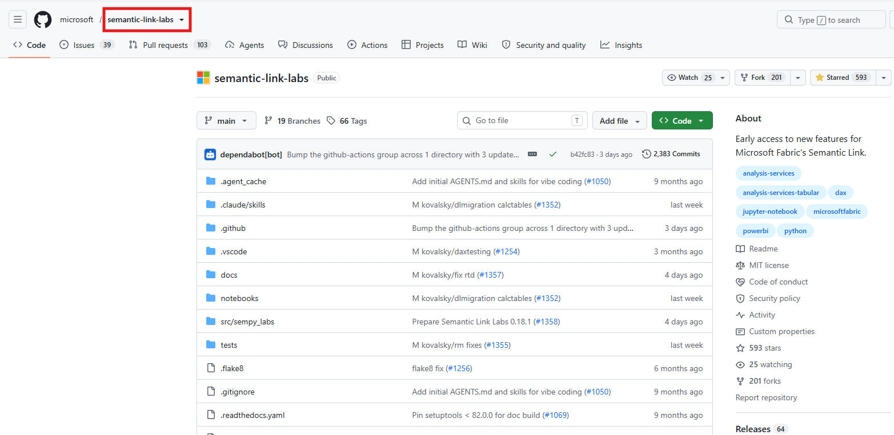
The rebind worked. The lineage view showed the Prod model reading the Prod SQL analytics endpoint, without the Dev tag.
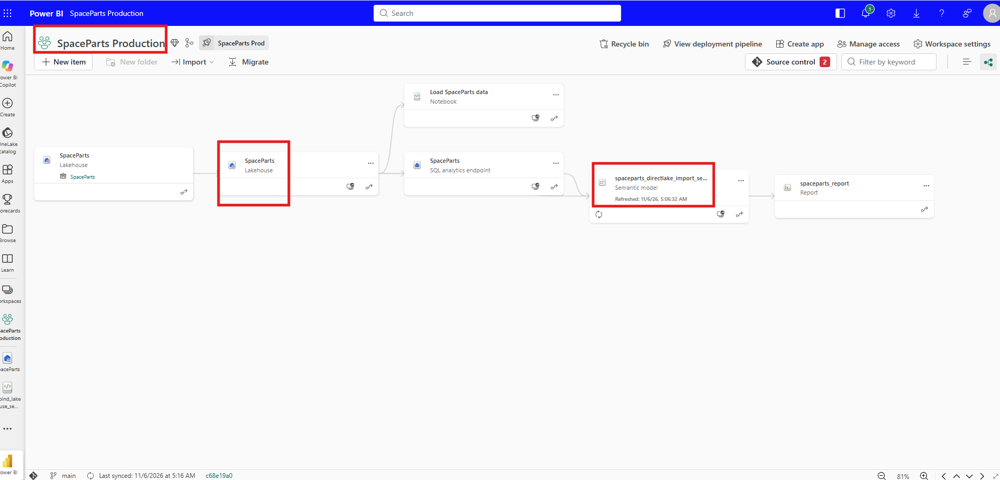
The Prod repository showed the same thing. In VS Code, expressions.tmdl on the Prod side now carried 26172069-a0ed-4c4a-8c61-a15715c9139e and 0c495b60-7437-4a3b-a1f7-f3ab518bad6d, the IDs from the Prod lakehouse's address bar.
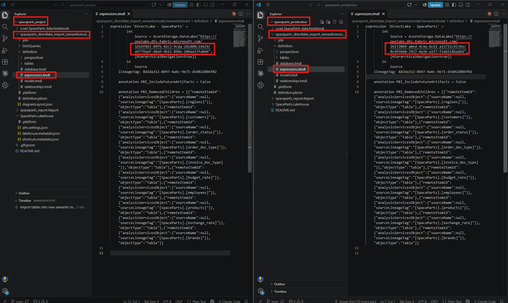
Then I deployed from Dev again, without a plan, and the lineage went straight back to the Dev workspace.
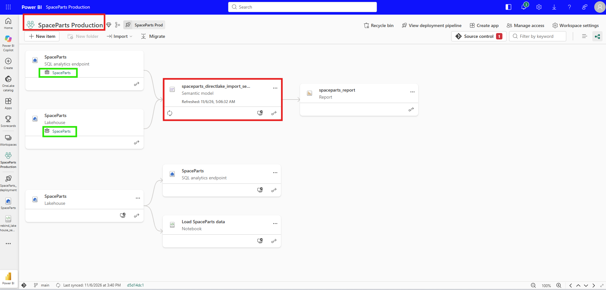
That settled what I needed. A rebind done by hand in Prod lasts only until the next deployment. The step has to run inside every deployment, and running a step inside a deployment is what deployment plans are for.
4. Building the Plan, and a Notebook Prod Did Not Have
Deployment plans sit behind a tenant setting. In the Admin portal, Users can create deployment plan (preview) items was listed under Microsoft Fabric with a New badge, and I enabled it for the entire organization. The Enable deployment-plan creation for your tenant section of Create a deployment plan in Microsoft Fabric walks through the same setting.
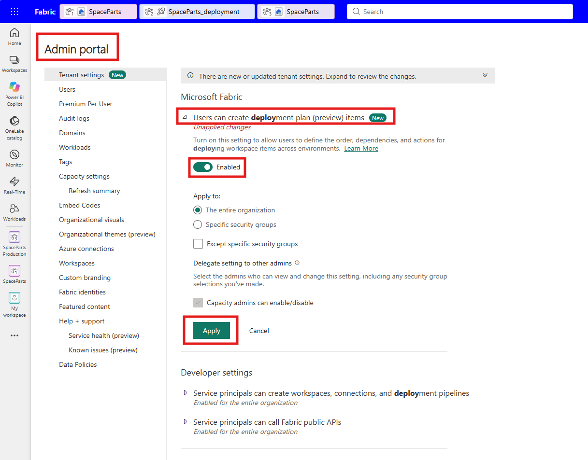
A plan is a workspace item, so I created one in the Dev workspace from New item, where searching for deploy shows Deployment Plan (preview).
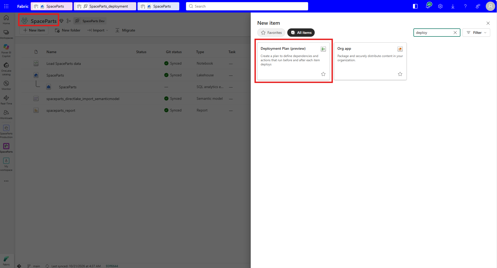
I named it DeploymentPlan_SpaceParts and kept it in the SpaceParts workspace.
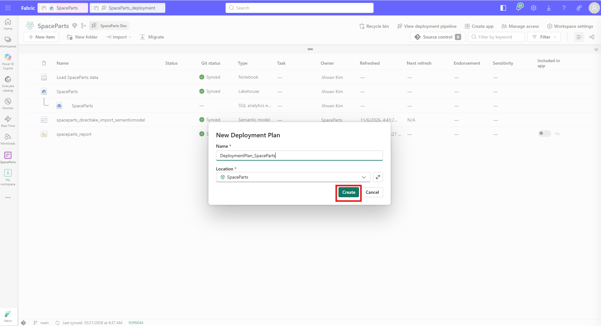
The canvas lists the workspace items on the left, and each one has Add to canvas in its menu.
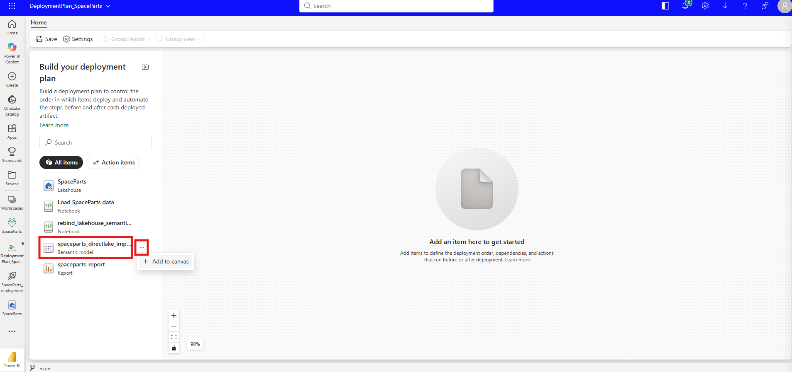
I added the semantic model, which became a deployment group with a Deploy box in the middle and two empty slots around it, Actions before and Actions after. Selecting Actions after opened a panel where Add action offered only the two notebooks, and I picked rebind_lakehouse_semantic_model.
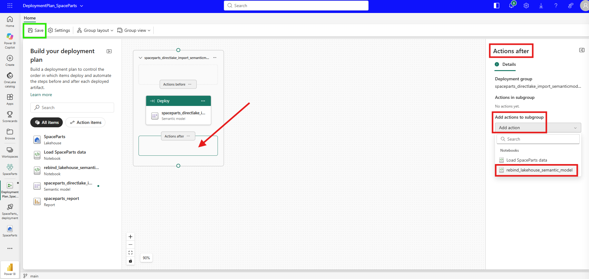
Only notebooks showed up because a plan can run only a few item types. The Item types you can run as an action section of Deployment plan actions in Microsoft Fabric lists notebooks, data pipelines, Dataflow Gen2, copy jobs and user data functions, all with the job type Execute. A plan can deploy the lakehouse, the model and the report, but it can't run them.
I saved the plan and went to the pipeline, where a new with plan picker now sits next to Deploy from. I chose DeploymentPlan_SpaceParts. In the list, the lakehouse and the model were Same as source, and the plan and the rebind notebook were Only in source, because neither existed in Prod yet. I had selected the lakehouse and the model, but not the notebook.
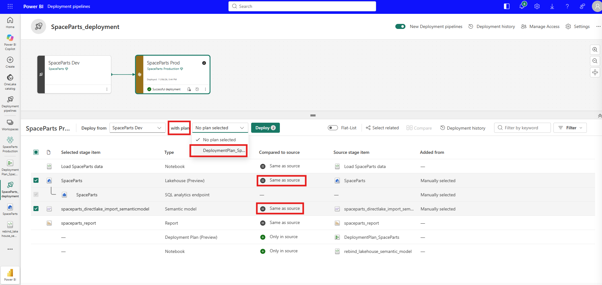
The confirmation dialog listed one new item, the plan.
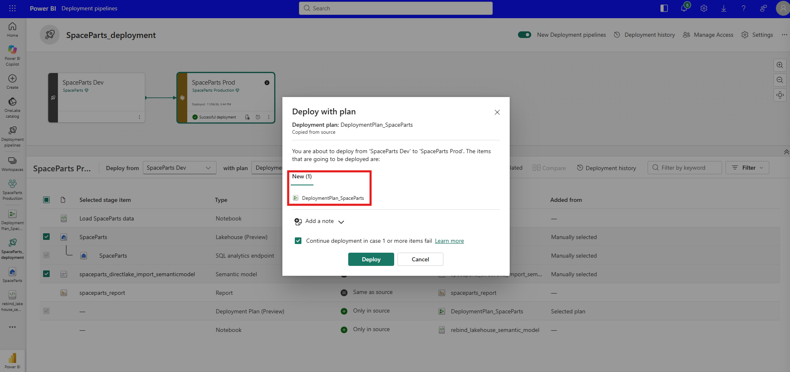
When I clicked Deploy, I got this instead of a deployment.
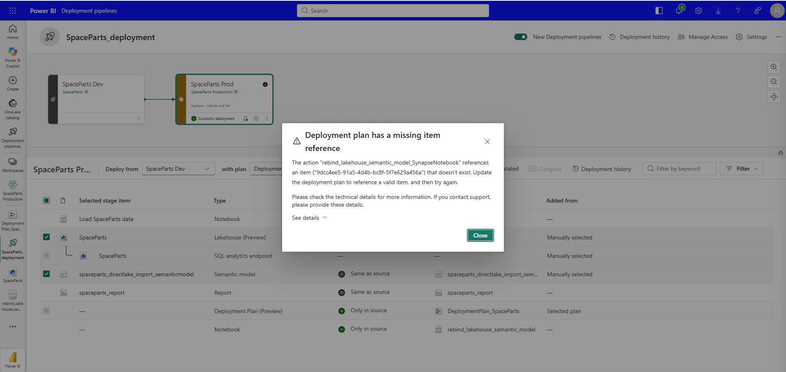
The action "rebind_lakehouse_semantic_model_SynapseNotebook" references an item ("9dcc4ee5-91a5-4d4b-bc8f-5f7e629a456a") that doesn't exist. This one is fair, and it is documented. The Determine the deployment scope section of What is a deployment plan in Microsoft Fabric? says that attaching a plan doesn't automatically select the items it references, and that the items the plan's actions need must be available in the target workspace when those actions run. My action wanted to run a notebook Prod did not have, and I had not asked the pipeline to bring it.
I selected the notebook too.
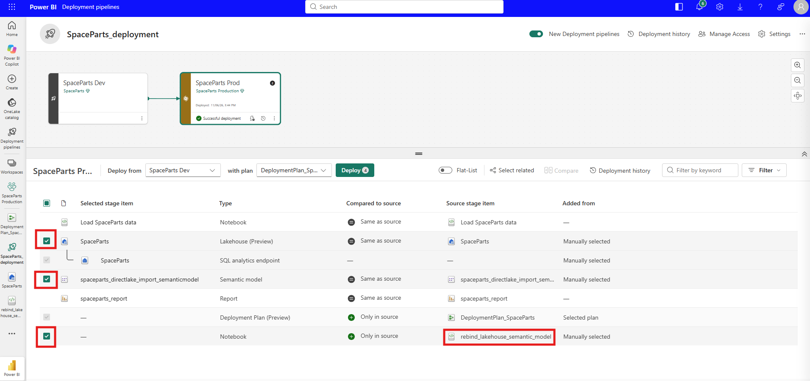
The dialog now said the plan was Copied from source and listed two new items, the plan and the notebook.
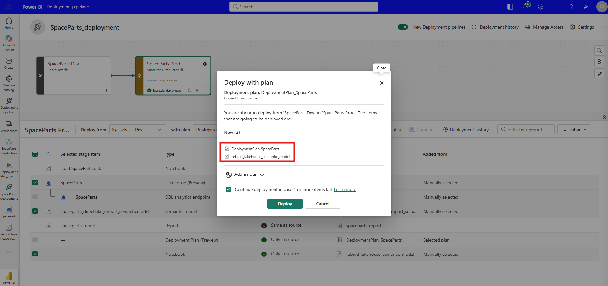
5. Same as Source, Then a Failed Deployment That Still Deployed the Model
That deployment succeeded. The plan and the rebind notebook arrived in Prod, and the model still read Dev.
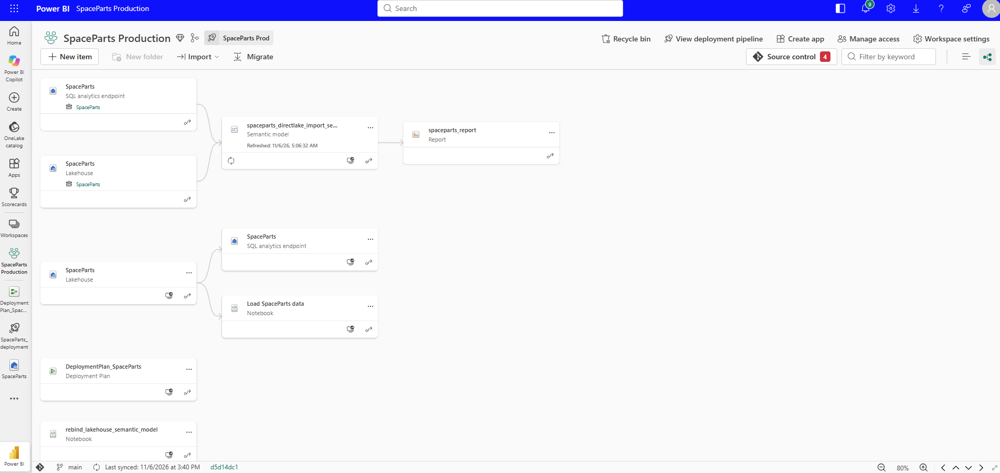
Looking back at the dialog, the model was never in it. It was selected, but it was Same as source, and the dialog listed only the two new items. My reading is that the model's group had nothing to deploy, so its post-deployment action never ran. The Execute deployment groups and actions part of the plan overview describes the order inside a group, pre-deploy actions first, then the item, then post-deploy actions, but it doesn't say what happens to a group whose item has nothing to deploy. So that part is my interpretation of what I saw, not something the article states.
To give the group something to do, I changed a small thing in the Dev model, and the pipeline marked it Different from source.
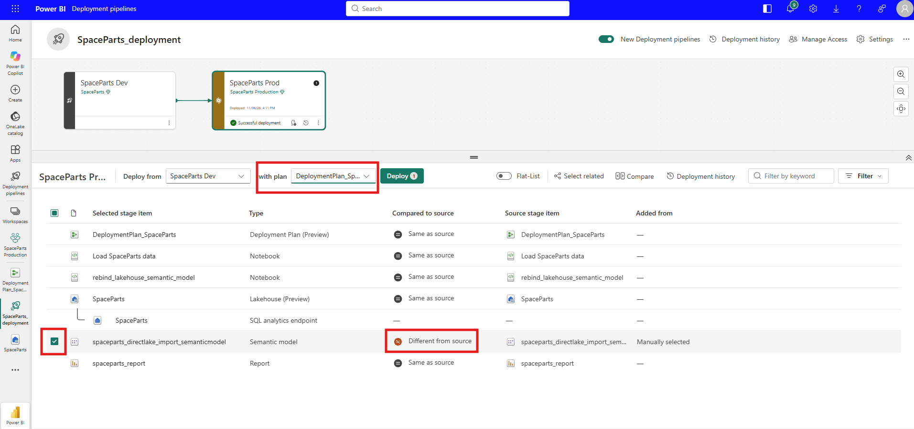
This deployment failed with Something went wrong. Deployment couldn't be completed.
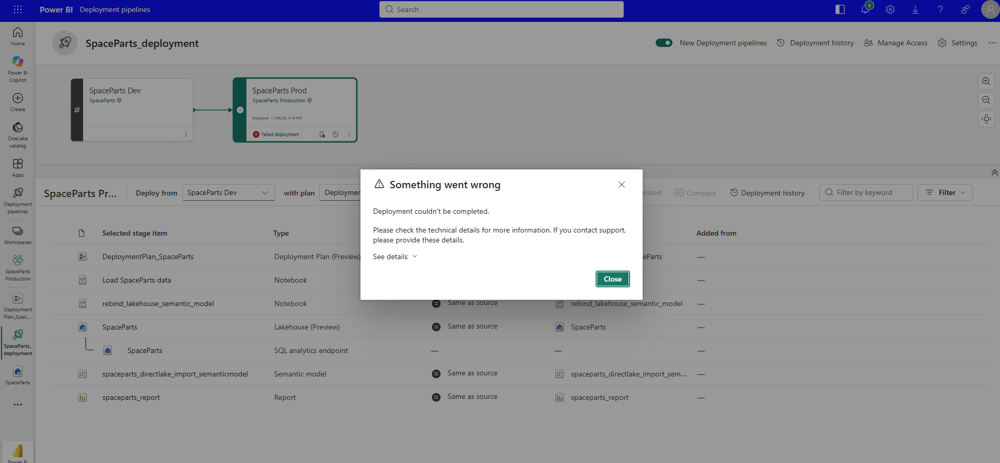
The stage card said Failed deployment. Yet the model in the list had turned to Same as source, which means it was deployed.
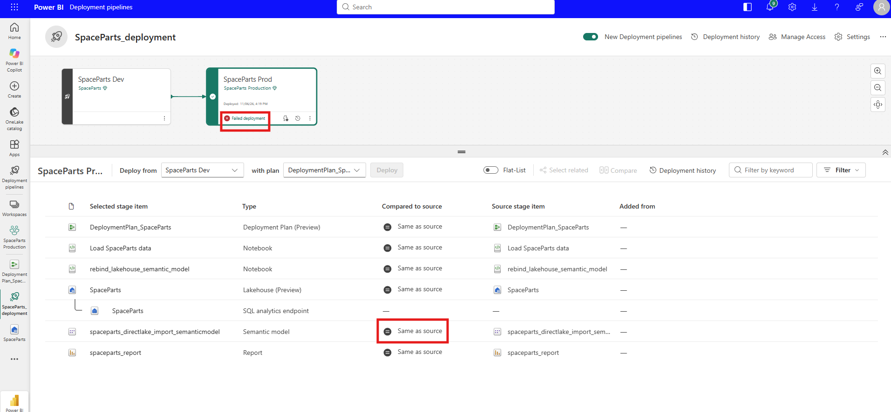
Both halves of that are documented. The If an operation fails section of the plan overview says the operation stops when an item or action fails and doesn't roll back completed work, and the Limitations during a deployment list adds that items already deployed stay in the target workspace while later items don't deploy. The pipeline view shows that the failure came after the model was deployed, not which step it was. The An action failed section of Troubleshoot deployment plans in Microsoft Fabric explains where to look: an action is a normal Fabric item run, so its failure details are in that item's run history, not in the deployment.
The lineage view still showed the Dev workspace on both of the model's inputs.
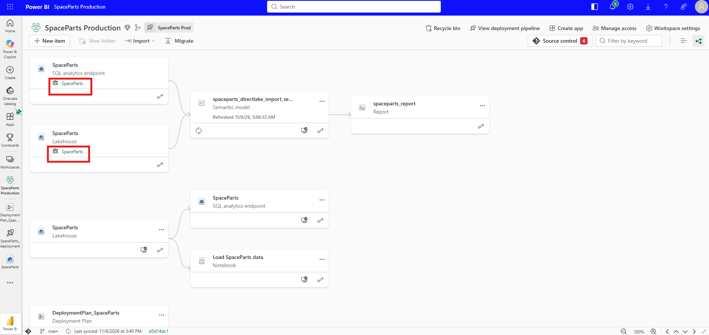
That is the state a deployment without rollback can leave behind: a new model definition in Prod, still pointing at Dev. At this point I thought the plan itself was not right.
6. Which Way the Arrow Points
Next I gave the notebook a deployment group of its own, so that the plan would deploy it too. On the canvas, a line from the bottom of one group to the top of another means the second group depends on the first. My first attempt put the model on top and the notebook underneath.
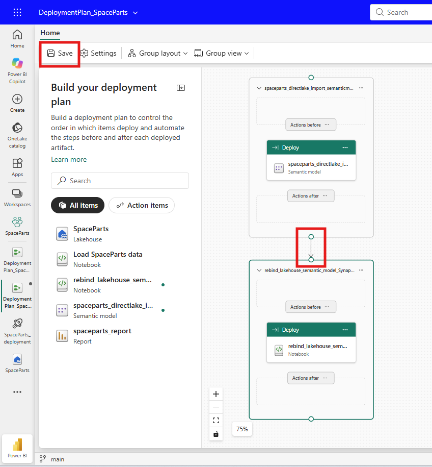
That arrow says the notebook group waits for the model group. In plan.yml it becomes a dependsOn entry on the notebook's group that names the model's group, and the Understand the plan.yml structure section of Deployment plan examples in Microsoft Fabric is clear that group order comes from dependsOn, not from where a group sits in the file. So this plan deploys the model first and the notebook second, which is backwards for what I needed, and the same article gives two reasons. The Validate before anything deploys section says an action can only run an item that's already deployed, so the item an action runs has to be deployed by an earlier group. And the Refresh content after it deploys section says a deployment updates item definitions and doesn't run anything, so deploying the notebook after the model doesn't run it either.
I changed the Dev model once more and deployed with this plan. Because the plan had changed too, the pipeline marked both the plan and the model Different from source, and I selected both.
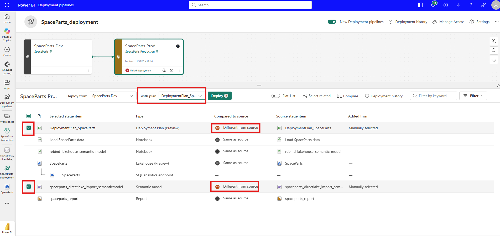
It took a few more rounds with AI before the design settled. The final canvas turns the arrows the other way.
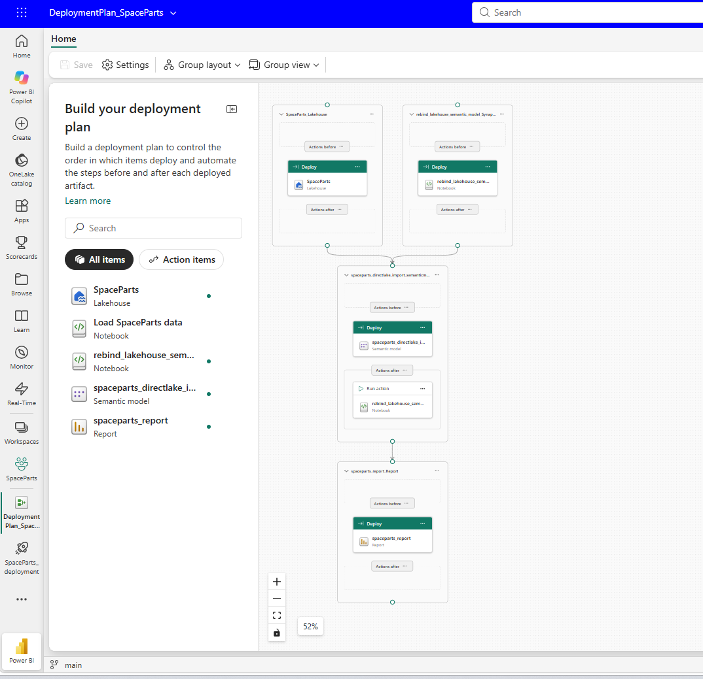
The lakehouse and the notebook each get a group at the top, and neither depends on the other. Both arrows lead into the model's group, so the model deploys only after both of them, and its Actions after slot holds Run action on rebind_lakehouse_semantic_model. The report's group waits for the model's. This is the same plan as it sits in my Dev repository, in DeploymentPlan_SpaceParts.DeploymentPlan/plan.yml:
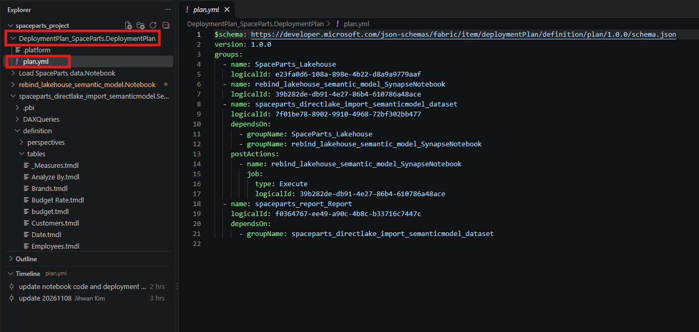
Three details in this file are easy to miss. The canvas gave each group the item's name plus a type suffix, so the notebook's group is rebind_lakehouse_semantic_model_SynapseNotebook and the model's is spaceparts_directlake_import_semanticmodel_dataset, old type names included. The notebook's logical ID, 39b282de-db91-4e27-86b4-610786a48ace, appears twice: once as its own group, which deploys it, and once under postActions, which runs it. It is the same logicalId as in the notebook's .platform file, and the Deployment plan definition article describes job.logicalId as the logical ID of the item whose job is run. And although the lakehouse and notebook groups don't depend on each other, the Limitations during a deployment list in the plan overview says independent groups can't deploy in parallel, so Fabric still takes them one at a time.
7. A Notebook That Only Knows Its Own Workspace, and No Refresh
The plan was half of the redesign. The other half was the notebook, and it took several iterations and trials with AI before it was ready to run inside a deployment. I won't walk through the code here. What I want to share is what I had to ask AI to check and fix, because those points matter more than the code itself:
- No hard-coded workspace. The first version had the Prod workspace name typed into it. The notebook now asks the runtime which workspace it is running in, and finds the lakehouse by name in that same workspace. That makes it the same notebook in every stage: in Dev it finds nothing to change and saves nothing, and in Prod it finds the Dev IDs and replaces them.
- Both kinds of tables. The Direct Lake URL in
expressions.tmdland theSql.Databaselines of the Import tables both have to point to Prod, or the model ends up reading from two workspaces. - Nothing to install. I removed a
%pip install semantic-link-labsline. Everything the notebook uses is insempy, which ships with Fabric, so the action doesn't install a library while a deployment waits for it. - Stop before saving. The notebook runs inside a deployment with nobody watching it. If a table is missing in the target lakehouse, or a source would still point to another lakehouse after the rebind, it raises an error and saves nothing.
- No parameters. The Pass parameters to an action section of the actions article says a plan passes parameter values through to the item and points to each item type's documentation for which parameters it accepts. I didn't find how a notebook action receives them, so the notebook needs none.
- No refresh. This one took the longest, so it gets the rest of this section.
The first deployment with the redesigned plan failed anyway. The rebind succeeded and the refresh at the end of the notebook did not, which failed the action, and a failed action failed the whole deployment, so the report's group never ran.
The refresh failed with Premium_ASWL_Error, and the message said the model uses a default data connection without explicit connection credentials. When I first saw it, the notebook was refreshing over XMLA, so I blamed XMLA and switched the refresh to the REST API. The error stayed exactly the same, so the transport was never the problem. Rebinding and refreshing are different kinds of work. A rebind edits the model definition, and saving a definition needs no credentials for the data. A refresh reads the sources, and in Prod they were on the default single sign-on connection.
The Key concepts and terminology and Connection configuration sections of Integrate Direct Lake security describe both options: the default SSO configuration usually works, and you can also bind a Direct Lake model to an explicit cloud connection to provide a fixed identity. Mapping the Prod model's data sources to explicit cloud connections, in the model's Settings under Gateway and cloud connections, is what made the hand-run refresh succeed. A deployment does not carry that mapping. The Item properties that are not copied section of the deployment pipelines process article lists data source credentials among the semantic model properties that aren't copied, and the plan overview says a plan doesn't deploy workspace-level configuration such as connections and gateway bindings.
What I did not expect, and found no documentation for, is that each deployment also reset the connection mapping I had made in Prod. During a deployment the model briefly pointed back at Dev, then the notebook pointed it at Prod again, and the refresh inside the notebook met the same missing connections as before.
So I took the refresh out of the notebook. The next deployment succeeded, and after it I mapped the connections in Prod and refreshed the model by hand. The lineage view finally showed what I had wanted since the first deployment: the Prod model reading the Prod lakehouse and its SQL analytics endpoint, with nothing from the Dev workspace in the picture.
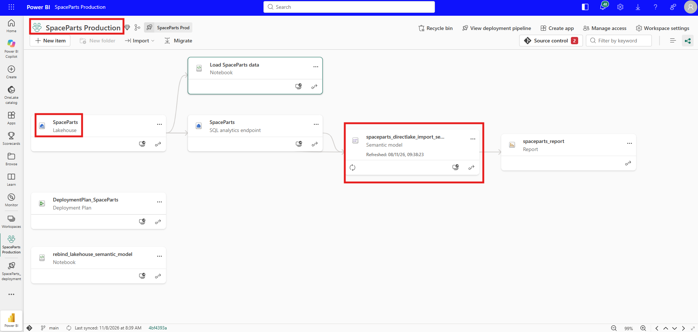
8. From a DevOps Standpoint: Three Kinds of Work in One Deployment
From a DevOps standpoint, this experiment split one deployment into three kinds of work: what the pipeline copies, what the plan runs, and what someone still does by hand in Prod.
Code review. plan.yml is short enough to review line by line, and two checks would have caught both of my mistakes. First, read dependsOn as "waits for". Every item an action runs has to be in the target workspace before the action starts, either because a group that the action's group waits for deployed it, or because it is already there from an earlier deployment. Second, compare the action's job.logicalId with the logicalId in that notebook's .platform file. If they match, the action runs the notebook you think it runs. A changed plan also shows up in the pipeline as Different from source, like any other item, so it can be reviewed before it reaches Prod.
Version control. Each workspace has its own repository, and after a successful run the two disagree on purpose. expressions.tmdl holds the Prod IDs in the Prod repository and the Dev IDs in the Dev repository, so any comparison between the two will always show that file, and that difference is correct. The plan lives in the Dev repository as DeploymentPlan_SpaceParts.DeploymentPlan/plan.yml and reaches Prod as an item, the same way the notebook does. One thing I have not settled: the rebind is a change made in the Prod workspace, and the Source control button in the last lineage screenshot shows two changes waiting. I have not checked which two items they are, and whether the Prod repository should receive the rebound model as a commit after every deployment is a decision I still have to make with my team.
Automation. The manual step left is the connection mapping, and it is also the step that would let the refresh go back into the notebook. The Items - Bind Semantic Model Connection REST API binds a semantic model data source reference to a data connection. Its Limitations section says it doesn't support bulk operations, so SpaceParts, with a OneLake source and a SQL analytics endpoint, would need a request for each, and its Permissions section says the caller must be the owner of the semantic model. I have not tried it yet, and it is the follow-up I want to write next.
Two questions stay open, and both matter before you run this on a model people depend on. The documentation doesn't say which identity runs a post-deployment action, and my notebook needs to read the old lakehouse and write to the target model. It also doesn't say what happens to a group whose item is in the plan but has nothing to deploy, which is the situation behind section 5. I would test both on workspaces nobody uses before trusting a plan with production.
A Note on Working with AI
The division of work was the usual one. AI wrote the notebook code, first from what it learned in semantic-link-labs and then through the iterations in section 7. I ran every deployment, built the plan on the canvas, and took every screenshot. AI was quick to write a rebind. Making it safe to run inside a deployment took the points in the section 7 list, and I had to ask for each of them.
What made the result trustworthy was not the AI but the evidence around it: the lineage view, the two repositories side by side in VS Code, and the pipeline's own comparison column, none of which the AI produced. The one time those disagreed, a lineage view that looked rebound next to a refresh that kept failing, was the moment I learned the difference between a rebind and a refresh.
Closing Thoughts
I expected a deployment plan to make Direct Lake follow the model to Prod. It doesn't do that, and it was never meant to. The mental model I am keeping is this: a deployment pipeline copies the model exactly as it is, and a deployment plan is the place inside every deployment where I run the step that points the copy at Prod.
There is a lot I did not test. I only went from Dev to Prod, with one model, one lakehouse and two stages. I never tried a pre-deployment action, a Variable Library reference, or a plan attached through Git integration instead of a pipeline. And the connection mapping is still a manual step after every deployment, so this setup is working, but it is not finished.
The cost so far is four deployment groups, one post-deployment action, one notebook that knows only its own workspace, and two steps by hand after every deployment: map the connections, then refresh.
I hope this helps having fun in exploring deployment plans and embracing this new era of Fabric deployments that can do more than copy!